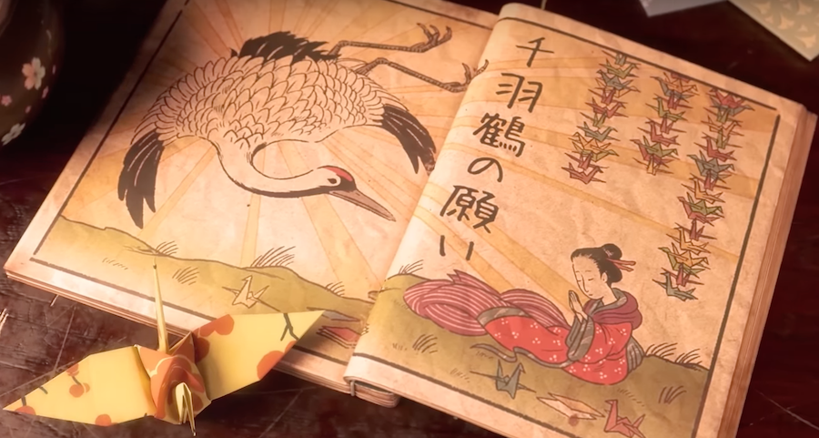
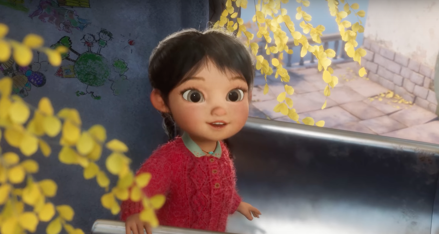
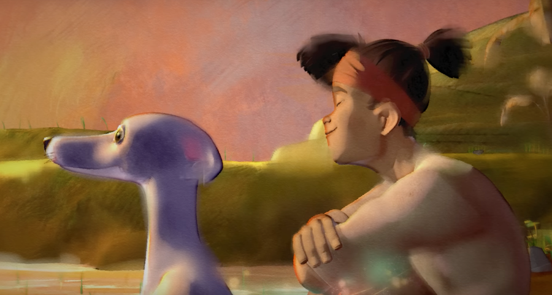
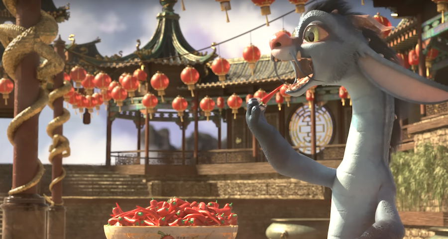

💖 Quatre courts-métrages d’animation
De magnifiques courts-métrages d’animation découverts sur Youtube.
💖 A folded wish - 2020
Résumé
Deux fillettes malades élevées par leur grand-mère se sont donné pour défi de plier le plus d’origami de grues possible.
Mon avis
Magnifique film d’animation, poétique et plein d’émotions. En quelques minutes, même si l’on ne comprend pas bien de quoi souffrent les fillettes et pourquoi elles plient les grues, on ressent absolument tout. Le dessin est époustouflant, les décors traditionnels envoûtants et les enfants pleins de douceur. Il est incroyable de parvenir à nous émouvoir à ce point en si peu de temps.
Court-métrage à voir ici.
Ce joli film a été réalisé par des étudiants possédant un énorme talent.
💖 Windup - 2021
Résumé
Un papa malheureux veille auprès de sa fille malade en lui passant la musique sur laquelle ils partageaient de merveilleux moments. Il semble perdre tout espoir quand sa boîte à musique se brise, mais dans son coma, la petite se laisse guider par le son et traverse de rudes épreuves pour le rejoindre.
Mon avis
De la même façon que pour le précédent, Windup est magnifique et émouvant. Impossible de ne pas verser une petite larme, même si tout finit bien. L’amour entre ce père et son enfant nous transperce et nous émeut tout du long. Un véritable chef-d’œuvre.
Court-métrage à voir ici.
💖 Run Totti run - 2023
Résumé
Un jeune riziculteur voit tous les jours un pauvre chien malheureux, attaché devant la boutique à laquelle il livre le riz. Il finit par demander au propriétaire s’il peut prendre le chien. Celui-ci accepte et une amitié nait entre l’animal chétif et le garçon. Ils s’amusent et plantent le riz ensemble. Mais Totti finit par faiblir, il est malade. La mort le guette. Le garçon fait tout pour le protéger, mais Totti est finalement emmené. De nouveau seul, le garçon est malheureux, jusqu’à ce qu’il réalise que ses souvenirs avec Totti sont magiques et qu’ils lui réchauffent le cœur.
Mon avis
Magnifique, poétique, drôle, touchant. Les émotions sont tellement puissantes que l’empathie et la compassion nous avalent tout entier. On ne peut pas ne pas pleurer devant tant d’amour, de beauté et de tristesse.
Le style graphique est particulier, très doux et fluide, un peu comme une aquarelle. C’est tout bonnement fabuleux.
Court-métrage à voir ici.
💖 Achoo - 2017
Résumé
Un jeune dragon inspiré par les légendes essaie d’appendre à cracher le feu pour être choisi afin de danser au nouvel an devant les humains. Malheureusement, il ne fait qu’éternuer et ses aînés se moquent de lui. Il invente alors une poudre qui lui permet d’éternuer sur commande et qui, en plus, fait des paillettes. Il découvre par accident qu’elle cause aussi des étincelles. Lassé d’être la risée des dragons, il utilise une quantité impressionnante de poudre et éternue dessus, provoquant ainsi les premiers feux d’artifices de l’Histoire.
Mon avis
Extraordinairement drôle et touchant. Encore une fois, en quelques minutes, nous nous attachons au petit dragon et ressentons énormément d’émotions. C’est un excellent travail, d’une douceur et d’une beauté rassurante.
Court-métrage à voir ici.